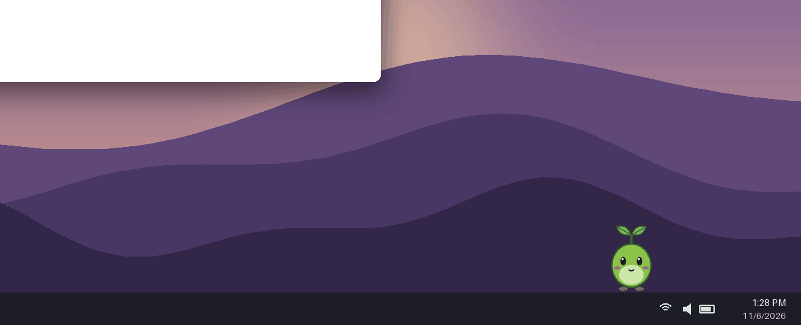
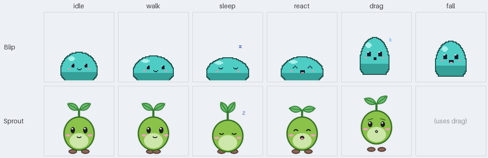

Desktop Companion
A small animated character that stands on your taskbar, wanders, naps, and reacts when you click it. Built so an artist can add new characters with image files and one short text file.
Download for Windows Source code
- Built with
- Godot 4, GDScript
- Platform
- Windows
- Status
- Working prototype with stand-in characters
- Tests
- 43 automated checks
What it does
- Runs in a transparent, borderless window that stays on top, and clicks pass through everywhere except the character.
- Idles, walks, sleeps, reacts to clicks, and can be picked up and dropped.
- Drops to a lower frame rate while the character sleeps, to stay light on the processor.
- Right-click menu to switch characters, resize, or reload art without restarting.
The part I care about
The app is driven by data. A character is a folder with a few image strips and a settings file. Drop a folder next to the program and it shows up in the menu. If something is wrong with the art, the app says which file and why, in plain language.

The characters shown are placeholders. Final art is in progress.